figurec
FigureQA: An Annotated Figure Dataset for Visual Reasoning
Abstract
We introduce FigureQA, a visual reasoning corpus of over one million question-answer pairs grounded in over images. The images are synthetic, scientific-style figures from five classes: line plots, dot-line plots, vertical and horizontal bar graphs, and pie charts. We formulate our reasoning task by generating questions from 15 templates; questions concern various relationships between plot elements and examine characteristics like the maximum, the minimum, area-under-the-curve, smoothness, and intersection. To resolve, such questions often require reference to multiple plot elements and synthesis of information distributed spatially throughout a figure. To facilitate the training of machine learning systems, the corpus also includes side data that can be used to formulate auxiliary objectives. In particular, we provide the numerical data used to generate each figure as well as bounding-box annotations for all plot elements. We study the proposed visual reasoning task by training several models, including the recently proposed Relation Network as a strong baseline. Preliminary results indicate that the task poses a significant machine learning challenge. We envision FigureQA as a first step towards developing models that can intuitively recognize patterns from visual representations of data.
1 Introduction
Scientific figures compactly summarize valuable information. They depict patterns like trends, rates, and proportions, and enable humans to understand these concepts intuitively at a glance. Because of these useful properties, scientific papers and other documents often supplement textual information with figures. Machine understanding of this structured visual information could assist human analysts in extracting knowledge from the vast documentation produced by modern science. Besides immediate applications, machine understanding of plots is interesting from an artificial intelligence perspective, as most existing approaches simply revert to reconstructing the source data, thereby inverting the visualization pipeline. Mathematics exams, such as the Graduate Records Examinations (GREs), often include questions regarding relationships between plot elements of a figure. When solving these exam questions, humans do not always build a table of coordinates for all data points, but often judge by visual intuition.
Thus motivated, and inspired by recent research in Visual Question Answering (VQA) (Antol et al., 2015; Goyal et al., 2016) and relational reasoning (Johnson et al., 2016; Suhr et al., 2017), we introduce FigureQA. FigureQA is a corpus of over one million question-answer pairs grounded in over figures, devised to study aspects of comprehension and reasoning in machines. There are five common figure types represented in the corpus, which model both continuous and categorical information: line, dot-line, vertical and horizontal bar, and pie plots. Questions concern one-to-all and one-to-one relations among plot elements, e.g. Is X the low median?, Does X intersect Y?. Their successful resolution requires inference over multiple plot elements. There are 15 question types in total, which address properties like magnitude, maximum, minimum, median, area-under-the-curve, smoothness, and intersections. Each question is posed such that its answer is either yes or no.
FigureQA is a synthetic corpus, like the related CLEVR dataset for visual reasoning (Johnson et al., 2016). While this means that the data may not exhibit the same richness as figures “in the wild”, it permits greater control over the task’s complexity, enables auxiliary supervision signals, and most importantly provides reliable ground-truth answers. Furthermore, by analyzing the performance on real figures of models trained on FigureQA it will be possible to extend the corpus to address limitations not considered during generation. The FigureQA corpus can be extended iteratively, each time raising the task complexity, as model performance increases. This is reminiscent of curriculum learning (Bengio et al., 2009) allowing iterative pretraining on increasingly challenging versions of the data. By releasing the data now, we want to gauge the interest in the research community and adapt future versions based on feedback, to accelerate research in this field. Additional annotation is provided to allow researchers to define tasks other than the one we introduce in this manuscript.
The corpus is built using a two-stage generation process. First, we sample numerical data according to a carefully tuned set of constraints and heuristics designed to make sampled figures appear natural. Next we use the Bokeh open-source plotting library (Bokeh Development Team, 2014) to plot the data in an image. This process necessarily gives us access to the quantitative data presented in the figure. We also modify the Bokeh backend to output bounding boxes for all plot elements: data points, axes, axis labels and ticks, legend tokens, etc. We provide the underlying numerical data and the set of bounding boxes as supplementary information with each figure, which may be useful in formulating auxiliary tasks, like reconstructing quantitative data given only a figure image. The bounding box targets of plot elements relevant to a question may be useful for supervising an attention mechanism, which can ignore potential distractions. Experiments in that direction are outside of the scope of this work, but we want to facilitate research of such approaches by releasing these annotations.
As part of the generation process we balance the ratio of yes and no answers for each question type and each figure. This makes it more difficult for models to exploit biases in answer frequencies while ignoring visual content.
We review related work in Section 2. In Section 3 we describe the FigureQA dataset and the visual-reasoning task in detail. Section 4 describes and evaluates four neural baseline models trained on the corpus: a text-only Long Short-Term Memory (LSTM) model (Hochreiter & Schmidhuber, 1997) as a sanity check for biases, the same LSTM model with added Convolutional Neural Network (CNN) image features (LeCun et al., 1998; Fukushima, 1988), one baseline instead using pre-extracted VGG image features (Simonyan & Zisserman, 2014), and a Relation Network (RN) (Santoro et al., 2017), a strong baseline model for relational reasoning.
The RN achieves respective accuracies of 72.40% and 76.52% on the FigureQA test set with alternated color scheme (described in Section 3.1) and the test set without swapping colors. An “official” version of the corpus is publicly available as a benchmark for future research.111https://datasets.maluuba.com/FigureQA We also provide our generation scripts222https://github.com/Maluuba/FigureQA, which are easily configurable, enabling researchers to tweak parameters to produce their own variations of the data, and our baseline implementations333https://github.com/vmichals/FigureQA-baseline.
2 Related work
Machine learning tasks that pose questions about visual scenes have received great interest of late. For example, Antol et al. (2015) proposed the VQA challenge, in which a model seeks to output a correct natural-language answer to a natural-language question concerning image . An example is the question “Who is wearing glasses?” about an image of a man and a woman, one of whom is indeed wearing glasses. Such questions typically require capabilities of vision, language, and common-sense knowledge to answer correctly. Several works tackling the VQA challenge observe that models tend to exploit strong linguistic priors rather than learning to understand visual content. To remedy this problem, Goyal et al. (2016) introduced the balanced VQA task. This features triples to supplement each image-question-answer triple , such that is similar to but the answer given and the same is rather than .
Beyond linguistic priors, another potential issue with the VQA challenges stems from their use of real images. Images of the real world entangle visual-linguistic reasoning with common-sense concepts, where the latter may be too numerous to learn from VQA corpora alone. On the other hand, synthetic datasets for visual-linguistic reasoning may not require common sense and may permit the reasoning challenge to be studied in isolation. CLEVR (Johnson et al., 2016) and NLVR (Suhr et al., 2017) are two such corpora. They present scenes of simple geometric objects along with questions concerning their arrangement. To answer such questions, machines should be capable of spatial and relational reasoning. These tasks have instigated rapid improvement in neural models for visual understanding (Santoro et al., 2017; Perez et al., 2017; Hu et al., 2017). FigureQA takes the synthetic approach of CLEVR and NLVR for the same purpose, to contribute to advances in figure-understanding algorithms.
The figure-understanding task has itself been studied previously. For example, Siegel et al. (2016) present a smaller dataset of figures extracted from research papers, along with a pipeline model for analyzing them. As in FigureQA, they focus on answering linguistic questions about the underlying data. Their FigureSeer corpus contains figure images annotated by crowdworkers with the plot-type labels. A smaller set of 600 figures comes with richer annotations of axes, legends, and plot data, similar to the annotations we provide for all figures in our corpus. The disadvantage of FigureSeer as compared with FigureQA is its limited size; the advantage is that its plots come from real data. The questions posed in FigureSeer also entangle reasoning about figure content with several detection and recognition tasks, such as localizing axes and tick labels or matching line styles with legend entries. Among other capabilities, models require good performance in optical character recognition (OCR). Accordingly, the model presented by Siegel et al. (2016) comprises a pipeline of disjoint, off-the-shelf components that are not trained end-to-end.
Poco & Heer (2017) propose the related task of recovering visual encodings from chart images. This entails detection of legends, titles, labels, etc., as well as classification of chart types and text recovery via OCR. Several works focus on data extraction from figures. Tsutsui & Crandall (2017) use convolutional networks to detect boundaries of subfigures and extract these from compound figures; Jung et al. (2017) propose a system for processing chart images, which consists of figure-type classification followed by type-specific interactive tools for data extraction. Also related to our work is the corpus of Cliche et al. (2017). There, the goal is automated extraction of data from synthetically generated scatter plots. This is equivalent to the data-reconstruction auxiliary task available with FigureQA.
FigureQA is designed to focus specifically on reasoning, rather than subtasks that can be solved with high accuracy by existing tools for OCR. It follows the general VQA setup, but additionally provides rich bounding-box annotations for each figure along with underlying numerical data. It thus offers a setting in which existing and novel visual-linguistic models can be trained from scratch and may take advantage of dense supervision. Its questions often require reference to multiple plot elements and synthesis of information distributed spatially throughout a figure. The task formulation is aimed at achieving an “intuitive” figure-understanding system, that does not resort to inverting the visualization pipeline. This is in line with the recent trend in visual-textual datasets, such as those for intuitive physics and reasoning (Goyal et al., 2017; Mun et al., 2016).
The majority of recent methods developed for VQA and related vision-language tasks, such as image captioning (Xu et al., 2015; Fang et al., 2015), video-captioning (Yu et al., 2016), phrase localization (Hu et al., 2016), and multi-modal machine translation (Elliott & Kádár, 2017), employ a neural encoder-decoder framework. These models typically encode the visual modality with pretrained CNNs, such as VGG (Simonyan & Zisserman, 2014) or ResNet (He et al., 2016), and may extract additional information from images using pretrained object detectors (Ren et al., 2015). Language encoders based on bag-of-words or LSTM approaches are typically either trained from scratch (Elliott & Kádár, 2017) or make use of pretrained word embeddings (You et al., 2016). Global or local image representations are typically combined with the language encodings through attention (Xiong et al., 2016; Yang et al., 2016; Lu et al., 2016) and pooling (Fukui et al., 2016) mechanisms, then fed to a decoder that outputs a final answer in language. In this work we evaluate a standard CNN-LSTM encoder model as well as a more recent architecture designed expressly for relational reasoning (Santoro et al., 2017).
3 Dataset
FigureQA consists of common scientific-style plots accompanied by questions and answers concerning them. The corpus is synthetically generated at large scale: its training set contains images with 1.3 million questions; the validation and test sets each contain images with over questions.
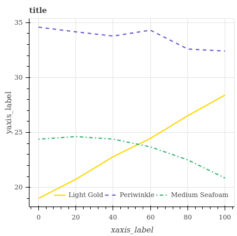
Q: Does Medium Seafoam intersect Light Gold?
A: Yes
Q: Is Medium Seafoam the roughest?
A: No
Q: Is Light Gold less than Periwinkle?
A: Yes
Q: Does Periwinkle have the maximum area under the curve?
A: Yes
Q: Does Medium Seafoam have the lowest value?
A: No
The corpus represents numerical data according to five figure types commonly found in analytical documents, namely, horizontal and vertical bar graphs, continuous and discontinuous line charts, and pie charts. These figures are produced with white background and the colors of plot elements (lines, bars and pie slices) are chosen from a set of colors (see Section 3.1). Figures also contain common plot elements such as axes, gridlines, labels, and legends. We generate question-answer pairs for each figure from its numerical source data according to predefined templates. We formulate 15 questions types, given in Table 2, that compare quantitative attributes of two plot elements or one plot element versus all others. In particular, questions examine properties like the maximum, minimum, median, roughness, and greater than/less than relationships. All are posed as a binary choice between yes and no. In addition to the images and question-answer pairs, we provide both the source data and bounding boxes for all figure elements, and supplement questions with the names, RGB codes, and unique identifiers of the featured colors. These are for optional use in analysis or to define auxiliary training objectives.
In the following section, we describe the corpus and its generation process in depth.
3.1 Source Data and Figures
The many parameters we use to generate our source data and figures are summarized in Table 1. These constrain the data-sampling process to ensure consistent, realistic plots with a high degree of variation. Generally, we draw data values from uniform random distributions within parameter-limited ranges. We further constrain the “shape” of the data using a small set of commonly observed functions (linear, quadratic, bell curve) with additive perturbations.
A figure’s data points are identified visually by color; textually (on axes and legends and in questions), we identify data points by the corresponding color names. For this purpose we chose 100 unique colors from the X11 named color set444See https://cgit.freedesktop.org/xorg/app/rgb/tree/rgb.txt., selecting those with a large color distance from white, the background color of the figures.
We construct FigureQA’s training, validation, and test sets such that all 100 colors are observed during training, while validation and testing are performed on unseen color-plot combinations. This is accomplished using a methodology consistent with that of the CLEVR dataset (Johnson et al., 2016), as follows. We divide our 100 colors into two disjoint, equally-sized subsets (denoted and ). In the training set, we color a particular figure type by drawing from one, and only one, of these subsets (see Table 1). When generating the validation and test sets, we draw from the opposite subset used for coloring the figure in the training set, i.e., if subset was used for training, then subset is used for validation and testing. We define this coloring for the validation and test sets as the “alternated color scheme.”555We additionally provide validation and test sets built without this scheme.
We define the appearance of several other aspects during data generation, randomizing these as well to encourage variation. The placement of the legend within or outside the plot area is determined by a coin flip, and we select its precise location and orientation to cause minimal obstruction by counting the occupancy of cells in a grid. Figure width is constrained to within one to two times its height, there are four font sizes available, and grid lines may be rendered or not – all with uniform probability.
| Figure Types | Elements | Points | Shapes | Color Scheme | |
|---|---|---|---|---|---|
| Training | Alternated | ||||
| Vertical Bar | 1 | 2-10 | uniform random, linear, bell-shape | ||
| Horizontal Bar | 1 | 2-10 | uniform random, linear, bell-shape | ||
| Line666Lines are drawn in five styles. | 2-7 | 5-20 | linear, linear with noise, quadratic | ||
| Dot Line | 2-7 | 5-20 | linear, linear with noise, quadratic | ||
| Pie | 2-7 | 1 | N/A | ||
3.2 Questions and Answers
We generate questions and their answers by referring to a figure’s source data and applying the templates given in Table 2. One yes and one no question is generated for each template that applies.
Once all question-answer pairs have been generated, we filter them to ensure an equal number of yes and no answers by discarding question-answer pairs until the answers per question type are balanced. This removes bias from the dataset to prevent models from learning summary statistics of the question-answer pairs.
Note that since we provide source data for all the figures, arbitrary additional questions may be synthesized. This makes the dataset extensible for future research.
To measure the smoothness of curves for question templates 9 and 10, we devised a roughness metric based on the sum of absolute pairwise differences of slopes, computed via finite differences. Concretely, for a curve with points defined by series and ,
3.3 Plotting
We generate figures from the synthesized source data using the open-source plotting library Bokeh. Bokeh was selected for its ease of use and modification and its expressiveness. We modified the library’s web-based rendering component to extract and associate bounding boxes for all figure elements. Figures are encoded in three channels (RGB) and saved in Portable Network Graphics (PNG) format.
| Template | Figure Types | |
|---|---|---|
| 1 | Is the minimum? | bar, pie |
| 2 | Is the maximum? | bar, pie |
| 3 | Is the low median? | bar, pie |
| 4 | Is the high median? | bar, pie |
| 5 | Is less than ? | bar, pie |
| 6 | Is greater than ? | bar, pie |
| 7 | Does have the minimum area under the curve? | line |
| 8 | Does have the maximum area under the curve? | line |
| 9 | Is the smoothest? | line |
| 10 | Is the roughest? | line |
| 11 | Does have the lowest value? | line |
| 12 | Does have the highest value? | line |
| 13 | Is less than ?777 In the sense of strictly greater/less than. This clarification is provided to judges for the human baseline. | line |
| 14 | Is greater than ?7 | line |
| 15 | Does intersect ? | line |
4 Models
To establish baseline performances on FigureQA, we implemented the four models described below. In all experiments we use training, validation, and test sets with the alternated color scheme (see Section 3.1). The results of an experiment with the RN baseline trained and evaluated with different schemes is provided in Appendix C. We train all models using the Adam optimizer (Kingma & Ba, 2014) on the standard cross-entropy loss with learning rate .
Preprocessing
We resize the longer side of each image to 256 pixels, preserving the aspect ratio; images are then padded with zeros to size . For data augmentation, we use the common scheme of padding images (to size ) and then randomly cropping them back to the previous size (.
Text-only baseline
Our first baseline is a text-only model that uses an LSTM 888The TensorFlow (Abadi et al., 2016) implementation based on the seminal work of Hochreiter & Schmidhuber (1997). to read the question word by word. Words are represented by a learned embedding of size 32 (our vocabulary size is only 85, not counting default tokens such as those marking the start and end of a sentence). The LSTM has 256 hidden units. A Multi-Layer Perceptron (MLP) classifier passes the last LSTM state through two hidden layers with 512 Rectified Linear Units (ReLUs) (Nair & Hinton, 2010) to produce an output. The second hidden layer uses dropout at a rate of 50% (Srivastava et al., 2014). This model was trained with batch size 64.
CNN+LSTM
In this model the MLP classifier receives the concatenation of the question encoding with a learned visual representation. The visual representation comes from a CNN with five convolutional layers, each with 64 kernels of size , stride 2, zero padding of 1 on each side and batch normalization (Ioffe & Szegedy, 2015), followed by a fully-connected layer of size 512. All layers use the ReLU activation function. The LSTM producing the question encoding has the same architecture as in the text-only model. This baseline was trained using four parallel workers each computing gradients on batches of size 160 which are then averaged and used for updating parameters.
CNN+LSTM on VGG-16 features
In our third baseline we extract features from layer pool5 of an ImageNet-pretrained VGG-16 network (Simonyan & Zisserman, 2014) using the code provided with Hu et al. (2017). The extracted features ( channels of size ) are then processed by a CNN with four convolutional layers, all with kernels, ReLU activation and batch normalization. The first two convolutional layers both have 128 output channels, the third and fourth 64 channels, each. The convolutional layers are followed by one fully-connected layer of size 512. This model was trained using a batch size of 64.
Relation Network
Santoro et al. (2017) introduced a simple yet powerful neural module for relational reasoning. It takes as input a set of “object” representations and computes a representation of relations between objects according to
| (1) |
where is the matrix containing -dimensional object representations stacked row-wise. Both and are implemented as MLPs, making the relational module fully-differentiable.
In our FigureQA experiments, we follow the overall architecture used by Santoro et al. (2017) in their experiments on CLEVR from pixels, adding one convolutional layer to account for the higher resolution of our input images and increasing the number of channels. We do not use random rotations for data augmentation, to avoid distortions that might change the correct response to a question.
The object representations are provided by a CNN with the same architecture as the one in the previous baseline, only dropping the fully-connected layer at the end. Each pixel of the CNN output (64 feature maps of size ) corresponds to one “object” , where and , denote height and width, respectively. To also encode the location of objects inside the feature map, the row and column coordinates are concatenated to that representation:
| (2) |
The RN takes as input the stack of all pairs of object representations, concatenated with the question; here the question encoding is once again produced by an LSTM with 256 hidden units. Object pairs are then separately processed by to produce a feature representation of the relation between the corresponding objects. The sum over all relational features is then processed by , yielding the predicted outputs.
The MLP implementing has four layers, each with ReLU units. The MLP classifier processing the overall relational representation, has two hidden layers, each with ReLU units, the second layer using dropout with a rate of . An overall sketch of the RN’s structure is shown in Figure 2. The model was trained using four parallel workers, each computing gradients on batches of size 160, which are then averaged for updating parameters.
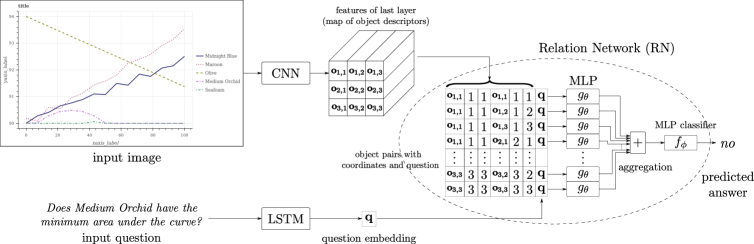
5 Experimental Results
All model baselines are trained and evaluated using the alternated color scheme. At each training step, we compute the accuracy on one randomly selected batch from the validation set and keep an exponential moving average with decay . Starting from the 100th update, we perform early-stopping using this moving average. The best performing model using this approximate validation performance measure is evaluated on the whole test set. Results of all our models are reported in Table 3. Figure 3 shows the training and validation accuracy over updates for the RN model.
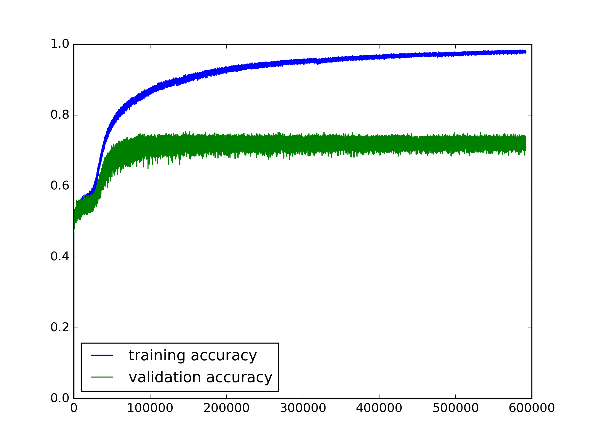
The comparison between text-only and CNN+LSTM models shows that the visual modality contributes to learning; however, due to the relational structure of the questions, the RN significantly outperforms the simpler CNN+LSTM model.
Our editorial team answered a subset from our test set, containing questions, corresponding to randomly selected figures (roughly 250 per figure type). The results are reported in Table 4 and compared with the CNN+LSTM and RN baselines evaluated on the same subset. Our human baseline shows that while the problem is also challenging for humans, there is still a significant performance margin over our model baselines.
Tables 5 and 6 show the performances of the CNN+LSTM and RN baselines compared to the performances of our editorial staff by figure type and by question type, respectively. More details on the human baseline and an analysis of results are provided in Appendix B.
| Model | Validation Accuracy (%) | Test Accuracy (%) |
|---|---|---|
| Text only | 50.01 | 50.01 |
| CNN+LSTM | 56.16 | 56.00 |
| CNN+LSTM on VGG-16 features | 52.31 | 52.47 |
| RN | 72.54 | 72.40 |
| Model | Test Accuracy (%) |
|---|---|
| CNN+LSTM | 56.04 |
| RN | 72.18 |
| Human | 91.21 |
| Figure Type | CNN+LSTM | RN | Human |
|---|---|---|---|
| Vertical Bar | 59.63 | 77.13 | 95.90 |
| Horizontal Bar | 57.69 | 77.02 | 96.03 |
| Line | 54.46 | 66.69 | 90.55 |
| Dot Line | 54.19 | 69.22 | 87.20 |
| Pie | 55.32 | 73.26 | 88.26 |
| Template | CNN+LSTM | RN | Human | |
|---|---|---|---|---|
| 1 | Is the minimum? | 56.63 | 76.78 | 97.06 |
| 2 | Is the maximum? | 58.54 | 83.47 | 97.18 |
| 3 | Is the low median? | 53.66 | 66.69 | 86.39 |
| 4 | Is the high median? | 53.53 | 66.50 | 86.91 |
| 5 | Is less than ? | 61.36 | 80.49 | 96.15 |
| 6 | Is greater than ? | 61.23 | 81.00 | 96.15 |
| 7 | Does have the minimum area under the curve? | 56.60 | 69.57 | 94.22 |
| 8 | Does have the maximum area under the curve? | 55.69 | 78.45 | 95.36 |
| 9 | Is the smoothest? | 55.49 | 58.57 | 78.02 |
| 10 | Is the roughest? | 54.52 | 56.28 | 79.52 |
| 11 | Does have the lowest value? | 55.08 | 69.65 | 90.33 |
| 12 | Does have the highest value? | 58.90 | 76.23 | 93.11 |
| 13 | Is less than ?999 In the sense of strictly greater/less than. This clarification is provided to judges for the human baseline. | 50.62 | 67.75 | 90.12 |
| 14 | Is greater than ?9 | 51.00 | 67.12 | 89.88 |
| 15 | Does intersect ? | 49.88 | 68.75 | 89.62 |
6 Conclusion
We introduced FigureQA, a machine learning corpus for the study of visual reasoning on scientific figures. To build this dataset, we synthesized over one million question-answer pairs grounded in over synthetic figure images. Questions examine plot characteristics like the extrema, area-under-the-curve, smoothness, and intersection, and require integration of information distributed spatially throughout a figure. The corpus comes bundled with side data to facilitate the training of machine learning systems. This includes the numerical data used to generate each figure and bounding-box annotations for all plot elements. We studied the visual-reasoning task by training four neural baseline models on our data, analyzing their test-set performance, and comparing it with that of humans. Results indicate that more powerful models must be developed to reach human-level performance.
In future work, we plan to test the transfer of models trained on FigureQA to question-answering on real scientific figures, and to iteratively extend the dataset either by significantly increasing the number of templates or by crowdsourcing natural-language questions-answer pairs. We envision FigureQA as a first step to developing models that intuitively extract knowledge from the numerous figures produced by modern science.
Acknowledgments
We thank Mahmoud Adada, Rahul Mehrotra and Marc-Alexandre Côté for technical support, as well as Adam Ferguson, Emery Fine and Craig Frayne for their help with the human baseline. This research was enabled in part by support provided by WestGrid and Compute Canada.
References
- Abadi et al. (2016) Martín Abadi, Ashish Agarwal, Paul Barham, Eugene Brevdo, Zhifeng Chen, Craig Citro, Greg S Corrado, Andy Davis, Jeffrey Dean, Matthieu Devin, et al. Tensorflow: Large-scale machine learning on heterogeneous distributed systems. arXiv preprint arXiv:1603.04467, 2016.
- Antol et al. (2015) Stanislaw Antol, Aishwarya Agrawal, Jiasen Lu, Margaret Mitchell, Dhruv Batra, C Lawrence Zitnick, and Devi Parikh. Vqa: Visual question answering. In Proceedings of the IEEE International Conference on Computer Vision, pp. 2425–2433, 2015.
- Bengio et al. (2009) Yoshua Bengio, Jérôme Louradour, Ronan Collobert, and Jason Weston. Curriculum learning. In Proceedings of the 26th annual international conference on machine learning, pp. 41–48. ACM, 2009.
- Bokeh Development Team (2014) Bokeh Development Team. Bokeh: Python library for interactive visualization, 2014. URL http://www.bokeh.pydata.org.
- Cliche et al. (2017) Mathieu Cliche, David Rosenberg, Dhruv Madeka, and Connie Yee. Scatteract: Automated extraction of data from scatter plots. arXiv preprint arXiv:1704.06687, 2017.
- Elliott & Kádár (2017) Desmond Elliott and Ákos Kádár. Imagination improves multimodal translation. arXiv preprint arXiv:1705.04350, 2017.
- Fang et al. (2015) Hao Fang, Saurabh Gupta, Forrest Iandola, Rupesh K Srivastava, Li Deng, Piotr Dollár, Jianfeng Gao, Xiaodong He, Margaret Mitchell, John C Platt, et al. From captions to visual concepts and back. In Proceedings of the IEEE conference on computer vision and pattern recognition, pp. 1473–1482, 2015.
- Fukui et al. (2016) Akira Fukui, Dong Huk Park, Daylen Yang, Anna Rohrbach, Trevor Darrell, and Marcus Rohrbach. Multimodal compact bilinear pooling for visual question answering and visual grounding. arXiv preprint arXiv:1606.01847, 2016.
- Fukushima (1988) Kunihiko Fukushima. Neocognitron: A hierarchical neural network capable of visual pattern recognition. Neural networks, 1(2):119–130, 1988.
- Goyal et al. (2017) Raghav Goyal, Samira Kahou, Vincent Michalski, Joanna Materzyńska, Susanne Westphal, Heuna Kim, Valentin Haenel, Ingo Fruend, Peter Yianilos, Moritz Mueller-Freitag, et al. The" something something" video database for learning and evaluating visual common sense. arXiv preprint arXiv:1706.04261, 2017.
- Goyal et al. (2016) Yash Goyal, Tejas Khot, Douglas Summers-Stay, Dhruv Batra, and Devi Parikh. Making the v in vqa matter: Elevating the role of image understanding in visual question answering. arXiv preprint arXiv:1612.00837, 2016.
- He et al. (2016) Kaiming He, Xiangyu Zhang, Shaoqing Ren, and Jian Sun. Deep residual learning for image recognition. In Proceedings of the IEEE conference on computer vision and pattern recognition, pp. 770–778, 2016.
- Hochreiter & Schmidhuber (1997) Sepp Hochreiter and Jürgen Schmidhuber. Long short-term memory. Neural computation, 9(8):1735–1780, 1997.
- Hu et al. (2016) Ronghang Hu, Huazhe Xu, Marcus Rohrbach, Jiashi Feng, Kate Saenko, and Trevor Darrell. Natural language object retrieval. In Proceedings of the IEEE Conference on Computer Vision and Pattern Recognition, pp. 4555–4564, 2016.
- Hu et al. (2017) Ronghang Hu, Jacob Andreas, Marcus Rohrbach, Trevor Darrell, and Kate Saenko. Learning to reason: End-to-end module networks for visual question answering. arXiv preprint arXiv:1704.05526, 2017.
- Ioffe & Szegedy (2015) Sergey Ioffe and Christian Szegedy. Batch normalization: Accelerating deep network training by reducing internal covariate shift. In International Conference on Machine Learning, pp. 448–456, 2015.
- Johnson et al. (2016) Justin Johnson, Bharath Hariharan, Laurens van der Maaten, Li Fei-Fei, C Lawrence Zitnick, and Ross Girshick. Clevr: A diagnostic dataset for compositional language and elementary visual reasoning. arXiv preprint arXiv:1612.06890, 2016.
- Jung et al. (2017) Daekyoung Jung, Wonjae Kim, Hyunjoo Song, Jeong-in Hwang, Bongshin Lee, Bohyoung Kim, and Jinwook Seo. Chartsense: Interactive data extraction from chart images. In Proceedings of the 2017 CHI Conference on Human Factors in Computing Systems, pp. 6706–6717. ACM, 2017.
- Kingma & Ba (2014) Diederik Kingma and Jimmy Ba. Adam: A method for stochastic optimization. arXiv preprint arXiv:1412.6980, 2014.
- LeCun et al. (1998) Yann LeCun, Léon Bottou, Yoshua Bengio, and Patrick Haffner. Gradient-based learning applied to document recognition. Proceedings of the IEEE, 86(11):2278–2324, 1998.
- Lu et al. (2016) Jiasen Lu, Jianwei Yang, Dhruv Batra, and Devi Parikh. Hierarchical question-image co-attention for visual question answering. In Advances In Neural Information Processing Systems, pp. 289–297, 2016.
- Mun et al. (2016) Jonghwan Mun, Paul Hongsuck Seo, Ilchae Jung, and Bohyung Han. Marioqa: Answering questions by watching gameplay videos. arXiv preprint arXiv:1612.01669, 2016.
- Nair & Hinton (2010) Vinod Nair and Geoffrey E Hinton. Rectified linear units improve restricted boltzmann machines. In Proceedings of the 27th international conference on machine learning (ICML-10), pp. 807–814, 2010.
- Perez et al. (2017) Ethan Perez, Harm de Vries, Florian Strub, Vincent Dumoulin, and Aaron Courville. Learning visual reasoning without strong priors. arXiv preprint arXiv:1707.03017, 2017.
- Poco & Heer (2017) Jorge Poco and Jeffrey Heer. Reverse-engineering visualizations: Recovering visual encodings from chart images. In Computer Graphics Forum, volume 36, pp. 353–363. Wiley Online Library, 2017.
- Ren et al. (2015) Shaoqing Ren, Kaiming He, Ross Girshick, and Jian Sun. Faster R-CNN: Towards real-time object detection with region proposal networks. arXiv preprint arXiv:1506.01497, 2015.
- Santoro et al. (2017) Adam Santoro, David Raposo, David GT Barrett, Mateusz Malinowski, Razvan Pascanu, Peter Battaglia, and Timothy Lillicrap. A simple neural network module for relational reasoning. arXiv preprint arXiv:1706.01427, 2017.
- Siegel et al. (2016) Noah Siegel, Zachary Horvitz, Roie Levin, Santosh Divvala, and Ali Farhadi. Figureseer: Parsing result-figures in research papers. In European Conference on Computer Vision, pp. 664–680. Springer, 2016.
- Simonyan & Zisserman (2014) Karen Simonyan and Andrew Zisserman. Very deep convolutional networks for large-scale image recognition. arXiv preprint arXiv:1409.1556, 2014.
- Srivastava et al. (2014) Nitish Srivastava, Geoffrey E Hinton, Alex Krizhevsky, Ilya Sutskever, and Ruslan Salakhutdinov. Dropout: a simple way to prevent neural networks from overfitting. Journal of machine learning research, 15(1):1929–1958, 2014.
- Suhr et al. (2017) Alane Suhr, Mike Lewis, James Yeh, and Yoav Artzi. A corpus of natural language for visual reasoning. In 55th Annual Meeting of the Association for Computational Linguistics, ACL, 2017.
- Tsutsui & Crandall (2017) Satoshi Tsutsui and David Crandall. A data driven approach for compound figure separation using convolutional neural networks. arXiv preprint arXiv:1703.05105, 2017.
- Xiong et al. (2016) Caiming Xiong, Stephen Merity, and Richard Socher. Dynamic memory networks for visual and textual question answering. In International Conference on Machine Learning, pp. 2397–2406, 2016.
- Xu et al. (2015) Kelvin Xu, Jimmy Ba, Ryan Kiros, Kyunghyun Cho, Aaron Courville, Ruslan Salakhudinov, Rich Zemel, and Yoshua Bengio. Show, attend and tell: Neural image caption generation with visual attention. In International Conference on Machine Learning, pp. 2048–2057, 2015.
- Yang et al. (2016) Zichao Yang, Xiaodong He, Jianfeng Gao, Li Deng, and Alex Smola. Stacked attention networks for image question answering. In Proceedings of the IEEE Conference on Computer Vision and Pattern Recognition, pp. 21–29, 2016.
- You et al. (2016) Quanzeng You, Hailin Jin, Zhaowen Wang, Chen Fang, and Jiebo Luo. Image captioning with semantic attention. In Proceedings of the IEEE Conference on Computer Vision and Pattern Recognition, pp. 4651–4659, 2016.
- Yu et al. (2016) Haonan Yu, Jiang Wang, Zhiheng Huang, Yi Yang, and Wei Xu. Video paragraph captioning using hierarchical recurrent neural networks. In Proceedings of the IEEE conference on computer vision and pattern recognition, pp. 4584–4593, 2016.
Appendix A Data Samples
Here we present a sample figures of each plot type (vertical bar graph, horizontal bar graph, line graph, dot line graph and pie chart) from our dataset along with the corresponding question-answer pairs and some of the bounding boxes.
A.1 Vertical Bar Graph
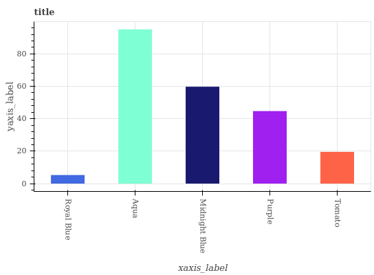
Q: Is Aqua the maximum?
A: Yes
Q: Is Midnight Blue greater than Aqua?
A: No
Q: Is Midnight Blue less than Aqua?
A: Yes
Q: Is Purple the high median?
A: Yes
Q: Is Tomato the low median?
A: No
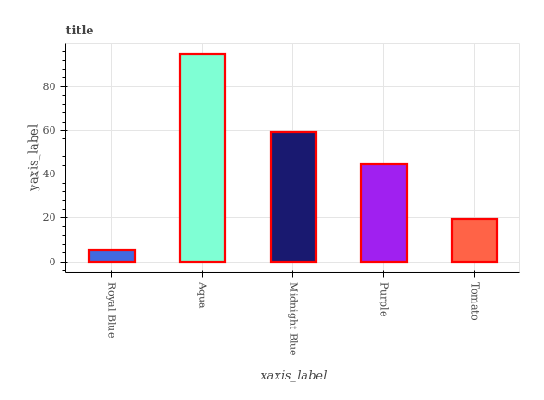
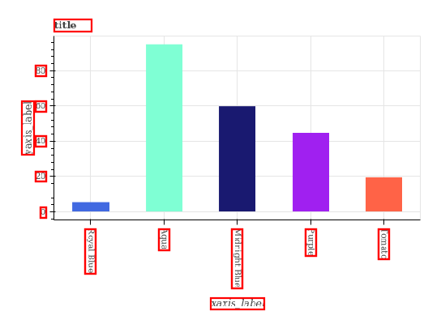
A.2 Horizontal Bar Graph
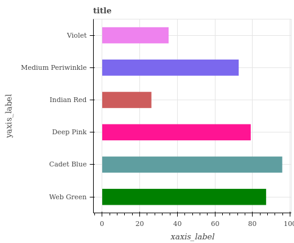
Q: Is Deep Pink the minimum?
A: No
Q: Is Cadet Blue the maximum?
A: Yes
Q: Is Deep Pink greater than Cadet Blue?
A: No
Q: Is Medium Periwinkle the low median?
A: Yes
Q: Is Deep Pink the high median?
A: Yes
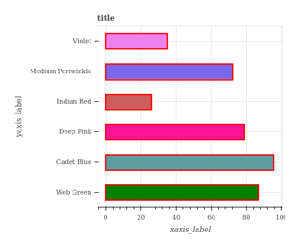
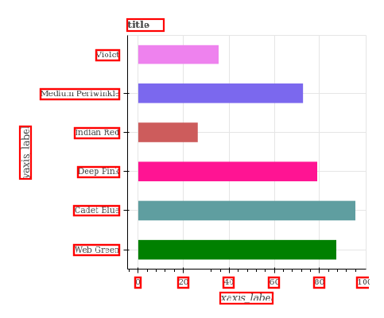
A.3 Line Graph
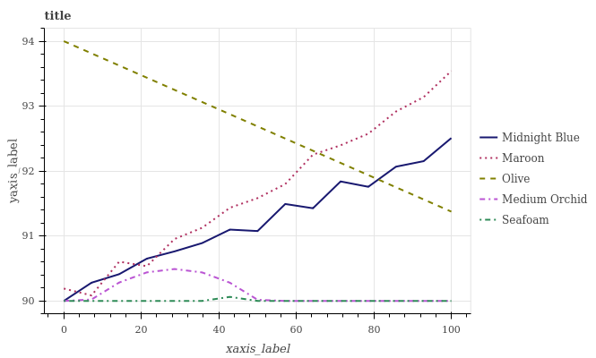
Q: Does Medium Orchid have the minimum area under the curve?
A: No
Q: Is Olive the smoothest?
A: Yes
Q: Does Olive have the highest value?
A: Yes
Q: Is Seafoam less than Olive?
A: Yes
Q: Does Olive intersect Midnight Blue?
A: Yes
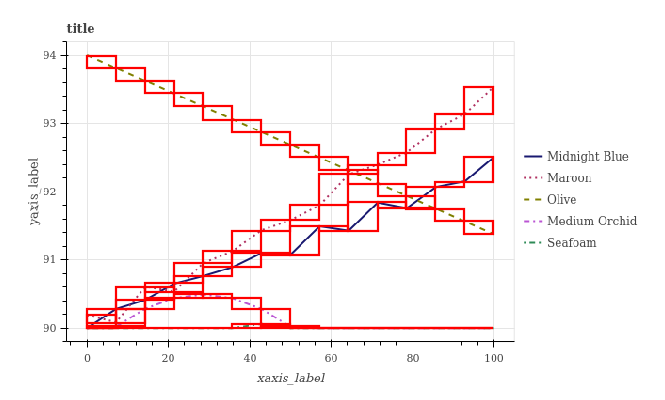
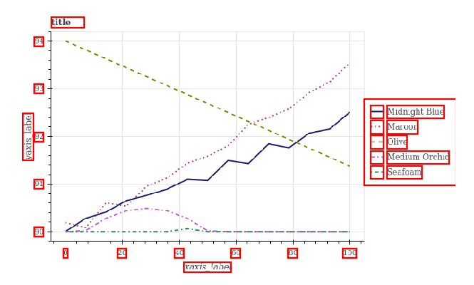
A.4 Dot Line Graph
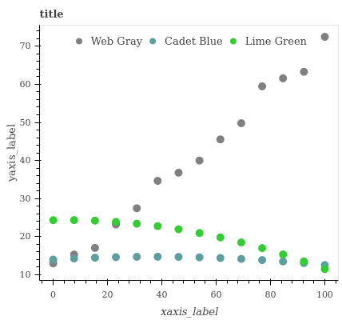
Q: Does Web Gray have the maximum area under the curve?
A: Yes
Q: Does Cadet Blue have the minimum area under the curve?
A: Yes
Q: Is Web Gray the roughest?
A: Yes
Q: Does Lime Green have the lowest value?
A: Yes
Q: Is Lime Green less than Web Gray?
A: No
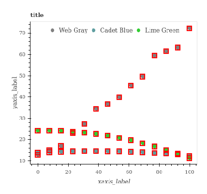
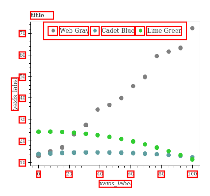
A.5 Pie Chart
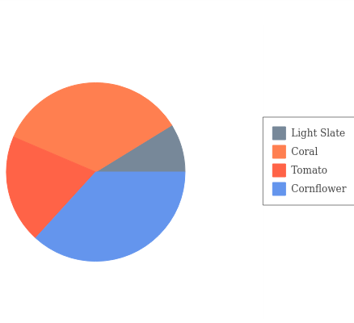
Q: Is Coral the minimum?
A: No
Q: Is Cornflower the maximum?
A: Yes
Q: Is Light Slate greater than Coral?
A: No
Q: Is Light Slate less than Coral?
A: Yes
Q: Is Tomato the low median?
A: Yes
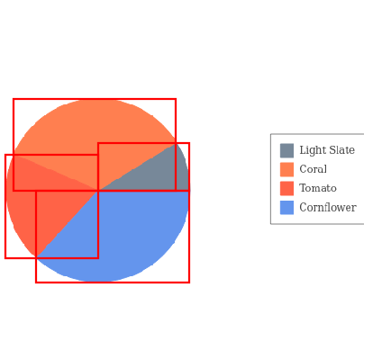
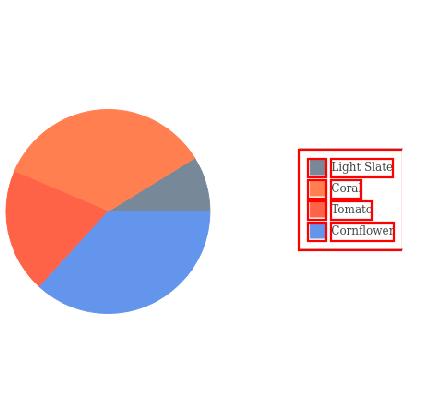
Appendix B Human baseline
To assess FigureQA’s difficulty and to set a benchmark for model performance, we measured human accuracy on a sample of the test set with the alternated color scheme. Our editorial staff answered questions corresponding to randomly selected figures (roughly 250 per type), providing them in each instance with a figure image, a question, and some disambiguation guidelines. Our editors achieved an accuracy of 91.21%, compared with 72.18% for the RN (Santoro et al., 2017) baseline. We provide further analysis of the human results below.
B.1 Performance by figure type
We stratify human accuracy by figure type in Table 5. People performed exceptionally well on bar graphs, though worse on line plots, dot-line plots, and pie charts. Analyzing the results and plot images from these figure categories, we learned that pie charts with similarly sized slices led most frequently to mistakes. Accuracy on dot-line plots was lower because plot elements sometimes obscure each other as Figure 21 shows.
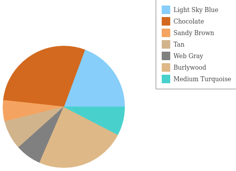
B.2 Performance by question type
Table 6 shows how human accuracy varies across question types, with people performing best on minimum, maximum, and greater/less than queries. Accuracy is generally higher on question types for categorical figures compared to continuous figures. It is noticeably lower for questions concerning the median and curve smoothness. Analysis indicates that many wrong answers to median questions occurred when plots had a larger number of (unordered) elements, which increases the difficulty of the task and may also induce an optical illusion. In the case of smoothness, annotators struggled to consider both the number of deviations in a curve and the size of deviations. This was particularly evident when comparing one line with more deviations to another with larger ones. Additionally, ground truth answers for smoothness were determined with computational or numerical precision that is beyond the capacity of human annotators. In some images, smoothness differences were too small to notice accurately with the naked eye.
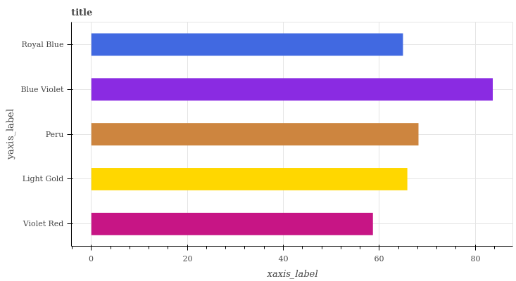
Which bar is the median: Light Gold or Royal Blue?
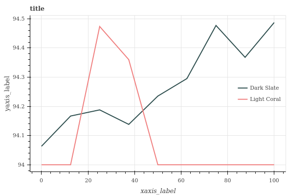
Which curve is rougher? One seems ’noisier’ while another seems more ’jagged’.
B.3 Unknown answers
We provided our annotators with a third answer option, unknown, for cases where it was difficult or impossible to answer a question unambiguously. Note that we instructed our annotators to select unknown as a last resort. Only 0.34% of test questions were answered with unknown, and this accounted for 3.91% of all incorrect answers. Looking at the small number of such responses, we observe that generally, annotators selected unknown in cases where two colors were difficult to distinguish from each other, when one plot element was covered by another, or when a line plot’s region of interest was obscured by a legend.
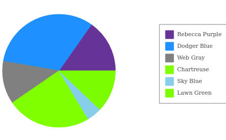
Q: Is Chartreuse the high median?
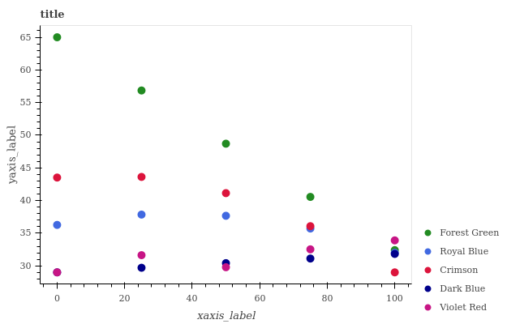
Q: Does Dark Blue intersect Royal Blue?
Appendix C Performance of the Relation Network with and without alternated color scheme
In this experiment we trained the RN baseline using early stopping on both validation sets (one with the same color scheme as the training set, the other with the color-set-to-plot assignments swapped - i.e. the “alternated” color scheme defined in Section 3.1), saving the respective best parameters for both. We then evaluated both models on the test sets for each color scheme. Table 7 compares the results.
| Model | test1 Accuracy (%) | test2 Accuracy (%) |
|---|---|---|
| RN (val1) | 67.74 | 60.35 |
| RN (val2) | 76.52 | 72.40 |